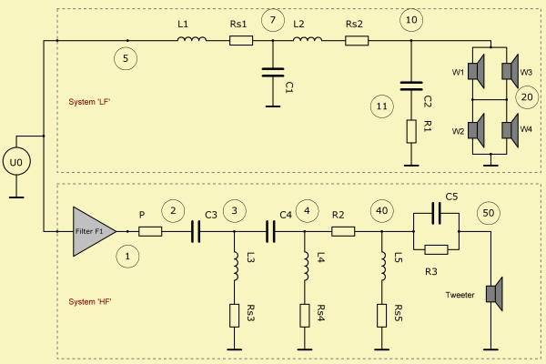

Example script for simulating a loudspeaker with a two-way passive cross-over in Direct Sound Mode.

Def_MeasRadiator 'Tweeter'
DataFileAlias='Imp_Tweeter'
DataFileAlias='SPL_Tweeter'
DataDistance=1m,1m
DataDriving={ dB(-25) } IsRms
Def_MeasRadiator 'Woofer'
DataFileAlias='Imp_Woofer'
DataFileAlias='SPL_Woofer'
DataDistance=1m,1m
DataDriving={ dB(-15) } IsRms
// Driving voltage of networks
Def_Driving
DrvValue={ dB(-15)}
IsRms
System 'LF'
// Lowpass 3rd order
Coil 'L1' Node=5=7 L=1.8mH Rs=0.86ohm
Capacitor 'C1' Node=7=0 C=27uF
Coil 'L2' Node=7=10 L=0.68mH Rs=0.51ohm
// Impedance compensation
Capacitor 'C2' Node=10=11 C=6.8uF
Resistor 'R1' Node=11=0 R=10ohm
MeasRadiator 'W1'
Def='Woofer'
Node=10=20 DrvGroup=1001
MeasRadiator 'W2'
Def='Woofer'
Node=10=20 DrvGroup=1002
MeasRadiator 'W2'
Def='Woofer'
Node=20=0 DrvGroup=1003
MeasRadiator 'W2'
Def='Woofer'
Node=20=0 DrvGroup=1004
System 'HF'
Filter 'F1' to=0.0ms { b0=1 }
Resistor 'P' Node=1=2 R=0.6ohm
Capacitor 'C3' Node=2=3 C=12uF
Coil 'L3' Node=3=0 L=1.2mH Rs=1.3ohm
Capacitor 'C4' Node=3=4 C=12uF
Coil 'L4' Node=4=0 L=8mH Rs=9.7ohm
Resistor 'R2' Node=4=40 R=4.7ohm
Coil 'L5' Node=40=0 L=0.22mH Rs=10.4ohm
Capacitor 'C5' Node=40=50 C=2.2uF
Resistor 'R3' Node=40=50 R=15ohm
MeasRadiator 'Tweeter'
Def='Tweeter'
Node=50=0 DrvGroup=2001
|
Definition part of script. Network components take reference to the Definitions. Def_MeasRadiator creates an electro-acoustic element, which is based on measurements. Def_MeasRadiator can be used in Direct Sound Analysis only. Def_Driving specifies the value of the global source, at which all Systems are wired in parallel. The global source is a potential source with no generator resistance. Here the global source is a voltage source. The value is calculated with the help of an inline-formula. Here begins the part, which sections are organized in Systems. All Systems are wired in parallel and are decoupled from each other. Only one network-node can be driven. In the script it is the one with the smallest node-index specified (for System 'LF' it is Node=5). DrvGroup= links the LE-component to the Direct Sound Script or to the Boundary Element Script. Here ends the first System and a new one starts. In a System the flow-network can be driven via a bank of Filter-components. Here, the Filter is used to check the sensitivity of the output due to some delay. |